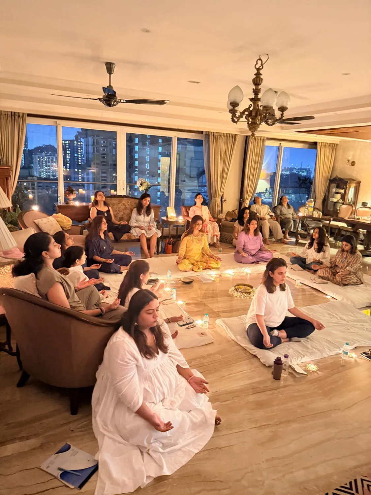

Every Navratri, you worship her. This one, you become her.

Come dressed in a colour that makes you feel like Devi.
For nine nights, India honours the nine forms of the Divine Feminine.
Each one a different face of Shakti: strength, devotion, courage, creation, nurturing, fierce protection, transformation, grace, fulfilment. We light lamps for her. We fast, pray and dance for her. But the oldest teaching of Shakti is simpler. The Goddess is not a guest you invite once a year. She is the energy already moving through you.
Most women are fluent in giving and strangers to receiving. But Shakti cannot flow through a vessel that only pours out.
This circle is designed to reverse the flow. For one evening, you are not the one holding the space. You are the one being held.
Dr. Devika Kamat is a holistic wellness coach and energy practitioner with over 8 years of experience guiding people back to themselves, and for the last several years, holding sacred circles where women put down what they carry and remember their own power. Her work weaves together breathwork, energy medicine, somatic practices, yin yoga, theta meditation and integrative nutrition, with globally recognised credentials including:
Her gift is simple and rare: she holds space so honestly that women forget to perform, and in that forgetting, let themselves be seen, blessed and received. She does not bring the Goddess to you. She helps you recognise the Shakti that was yours all along, steadier, softer, and more radiant than you remembered.
The body, the breath, and the feminine energy that has been running on empty.
Love, appreciation, abundance and grace, without having to earn it first.
The quiet radiance of a woman who has come home to herself.
You will not leave just relaxed. You will leave remembered.
Every year we invite the Goddess into our homes. This Navratri, I want you to notice she never left. Dr. Devika Kamat
I am feeling lighter. Skin glow is amazing. Evening shower feels rejuvenated. Meditation feels calmness. Nutrition fortunately is suited so well, otherwise I used to get acidity. Affirmations feel soothing and powerful.
I'm more energetic, sleeping well and not feeling hungry or having cravings. Your menu is so sufficient. 💖
This is a sacred circle, not a class.
Seats are few, and held for the women meant to be in them. Claim yours.
 Dr. Devika Kamat
Dr. Devika Kamat